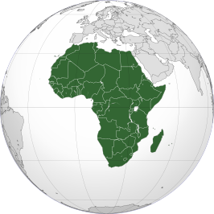

Afrika

Afrika is qua oppervlakte het op een na grootste continent op Aarde. Alleen Azië is groter.
Afrika beslaat zo'n 30.244.050 vierkante kilometer (vasteland en eilanden samen), wat 20,3% van de totale landoppervlakte van de aarde is. Er wonen meer dan 1 miljard mensen, wat ongeveer een zevende van de wereldbevolking is.
Van Afrika wordt wel gezegd dat de moderne mens daar zeer waarschijnlijk is ontstaan. Ook herbergt het een van de oudste menselijke beschavingen: het oude Egypte.